The insight
The tunnel is the new runway.
Fans watch the walk as closely as the warm-up. So give them one: everybody gets a tunnel walk.
Why AmazonWatch it, vote on it and buy it without leaving Amazon.
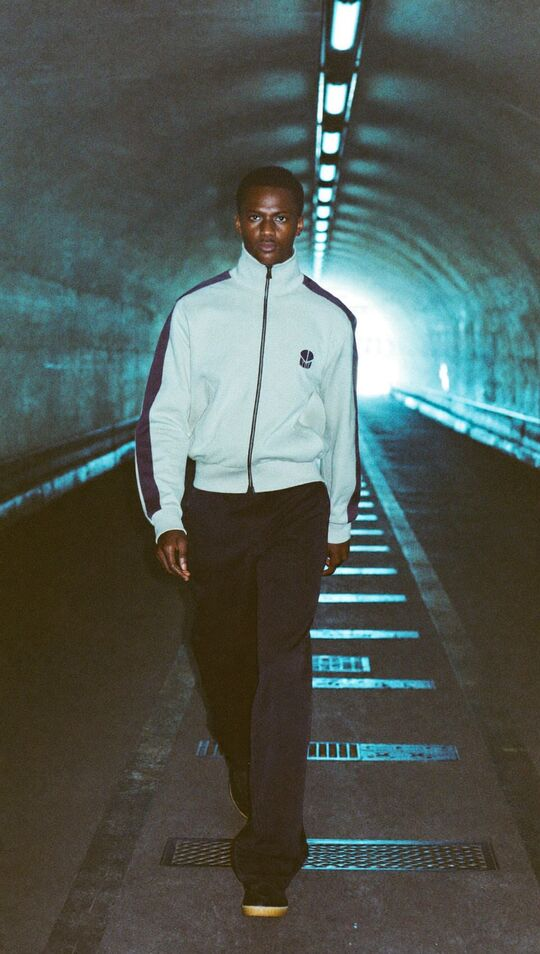
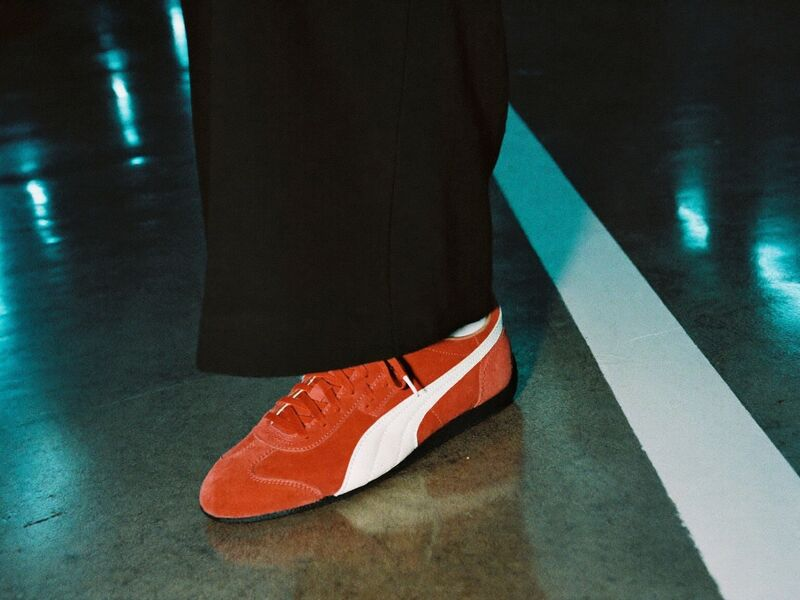
01 / 06Tunnel VisionSpeculative campaign · Brand partnership · Web, display, streaming TV2026
Everybody gets a tunnel walk.
A co-branded campaign idea for PUMA and Prime Video, pitched the way a brand partnerships team would pitch it. The pre-game tunnel walk has become sport’s runway. Tunnel Vision gives that walk to the fans: they walk a PUMA tunnel at the arena, the best walks go out live on Prime Video, Twitch votes for Fit of the Night, and every look can be bought on Amazon.
Speculative concept. Not affiliated with Amazon, Prime Video or PUMA.
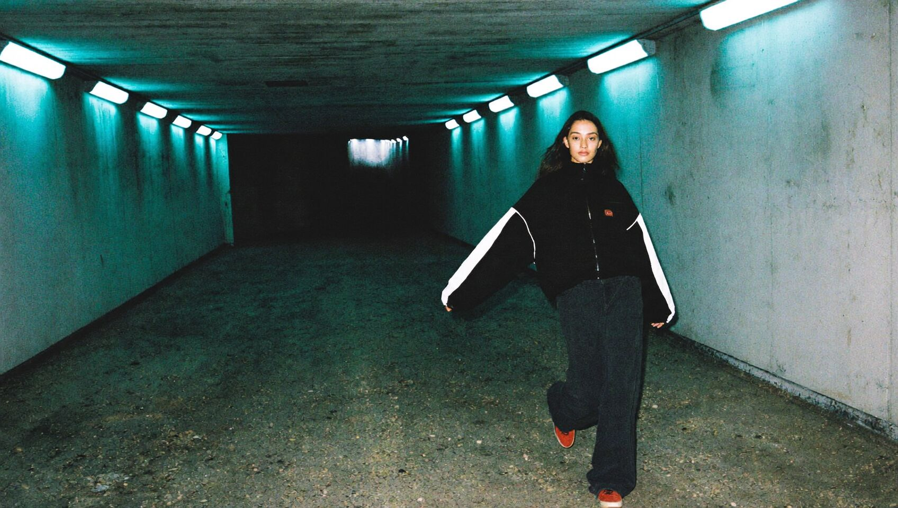
01Brief
PUMA wants young US fans back, and its Speedcat is the line still growing. Prime Video has the moment: an NBA doubleheader on Black Friday, the biggest shopping day of the year.
02Pitch
A pitch should survive being forwarded without me in the room. One slide for the idea, one for the key visual, one for how it rolls out across Amazon.
All photography in this campaign is AI-generated (Higgsfield) and retouched by me. Brand names appear as type only, never as the brands’ logos.
03Landing page
The landing page explains the walk, sells the fits and books a Fan Tunnel slot. The strip lights flick on one after another as it opens, like a tunnel waking up before a game. It shows the spec notice before anything else, and it never pretends: the cart buttons and the sign-up say plainly that nothing is sent.
I built it as a working responsive page, structured the way Webflow is (section_, _component and is- classes, one stylesheet of variables), so it can be rebuilt in Webflow one-to-one.
04Display
The display set is live HTML5, not flat pictures. Each banner walks you in: the photo pushes forward, the strip lights flick on, the line lands in two beats, then it holds on the CTA. It plays once in under ten seconds, ends on the CTA as IAB guidance asks, and shows the end frame straight away for anyone who prefers reduced motion.
The animated version is a real Lottie file (JSON, about 110 KB with its pictures inside). I built it in code from a small script instead of After Effects, so every keyframe is written out: the headline drops in, the light bars rush out of the vanishing point, and the end frame lands at 6 seconds. The headline is drawn as images in Archivo Extra Condensed, because the Lottie player spaces live text at the font’s normal width.
05The Amazon canvas
The same walk carries across Amazon’s surfaces, each designed to that surface’s rules: a co-branded Feature Rotator on the Fire TV home screen, an interactive pause ad on Prime Video, and a Fit of the Night vote on Twitch. The photography inside them is AI-generated.
Tunnel Vision
Black Friday Gameday. The walk starts 30 minutes before tip-off.
Sponsored · PUMALive and upcoming
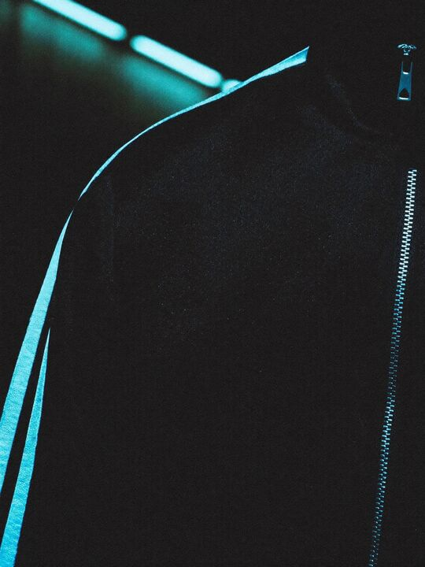
The T7 story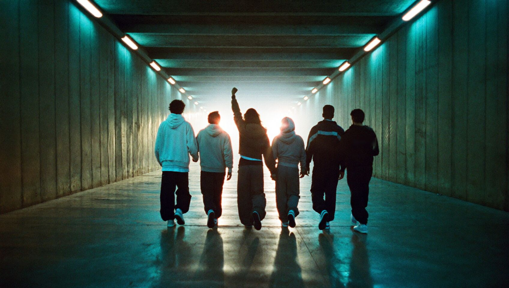
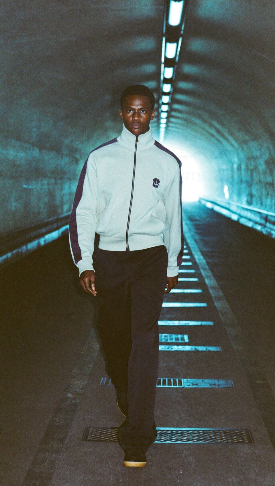
06Process
I started with the brands, not the pictures. Firecrawl gathered PUMA’s recent campaigns and results, Prime Video’s live sport schedule, Amazon’s ad specs and the Brand Innovation Lab’s past work. Only then did I set the art direction and generate imagery to match it.
Raw concrete, cold strip light and one hot colour. The cyan is the tunnel; the red is the shoe. Archivo Extra Condensed nods to PUMA’s motorsport and DIN-led type without copying its logo. Every photograph here is AI-generated.
I generated about twenty frames in Higgsfield for under twenty credits, and kept six. Three directions were dropped on purpose, and one frame was rejected for a brand-safety reason that a quick look would have missed.
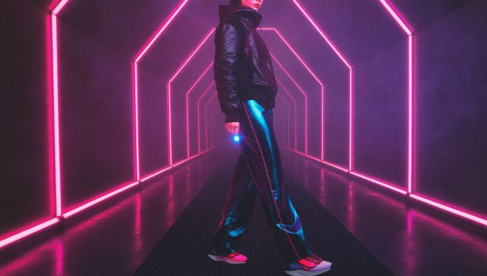
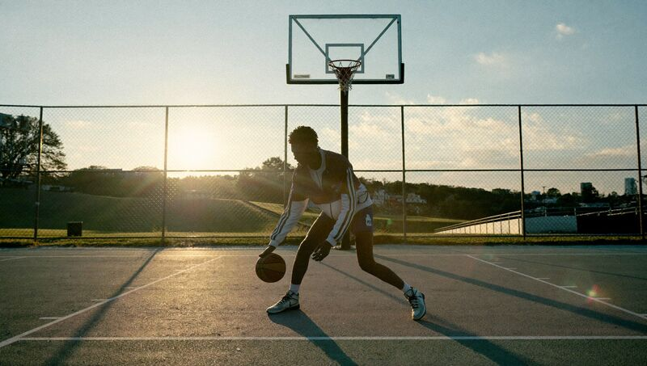
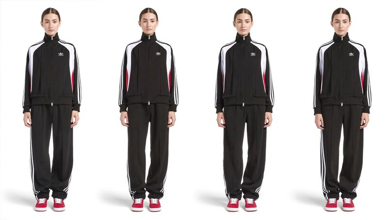
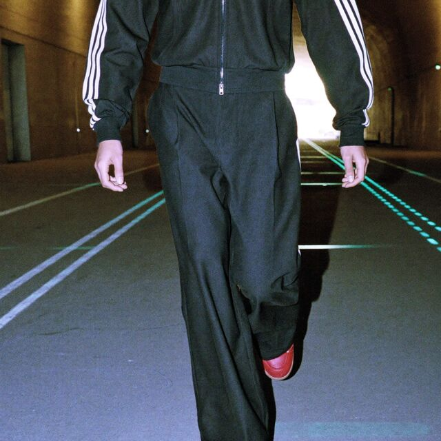
I also retouched what I kept: invented lettering on a jacket and a garbled label on the shoe were removed by hand, so no fake text or logos appear anywhere in the campaign.
Checked against WCAG 2.2 AA before anything shipped. One colour failed, so it never carries text.
| Check | Detail | Result |
|---|---|---|
| Bone on Ink | Body and headline text | 17.4 : 1 pass |
| Ink on Tunnel cyan | Every CTA button | 12.7 : 1 pass |
| Fog on Concrete | Secondary text on panels | 10.3 : 1 pass |
| Bone on Speedcat red | Considered for buttons | 3.8 : 1 fail, red kept for dots and swatches only |
| Motion | Banners, strip lights, Lottie | Reduced motion shows end frames |
| Banners | One play, under 10 s, no flashing above 3 per second | Pass |
| Keyboard and screen readers | Skip link, visible focus, labelled ads and mock-ups | Pass |
| Form | Visible labels, errors beside the field, focus moves to the error | Pass |
| Touch targets | Buttons and fields at least 44 px tall | Pass |
Short, confident lines in PUMA’s “Go Wild” voice, with the same words for the same things everywhere: it is always “the fits”, always “the Fan Tunnel”.
| Placement | Line | Call to action |
|---|---|---|
| Campaign | Everybody gets a tunnel walk. | Shop the fits |
| Pause ad | You paused. The fit didn’t. | Add to Amazon cart |
| Fire TV | The walk starts 30 minutes before tip-off. | Watch live |
| Fan Tunnel | Your walk. Their broadcast. | Save my slot |
| Twitch | Fit of the Night | Type !fits to shop every look |
| Alexa | “Alexa, shop the tunnel fit.” | Voice |
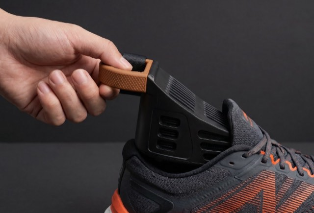
All work